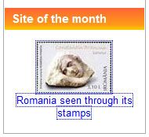
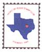

On this page one can find reactions to this site, appeared in the written press, on newsgroups or received by e-mail.
Hello Sir,
I am Miranda Donaire and I am the English community responsible of the website Delcampe (www.delcampe.net) Your website has been awarded DELCAMPE'S SITE OF THE MONTH August 2010.
 |
Each month Delcampe selects a "Site of the Month". We look for websites that are interesting for collectors friends, ones we consider a "must visit" or "worth the trip" for them. We choose our Sites of the Month based on the following criteria: - Content and Design - Speed - Navigation and Ergonomics - Google Rank.
|  |
||
"Romania
- Tara mea de glorii, tara mea de dor, tara mea de timbre
(My country of glory, my country of longing, my country of stamps)"
The above words open Victor Manta's new web site "Romania Through Its Stamps", and what a web site it is! Mr. Manta dedicates the site to "...you, a person who wishes to know more about Romania." By the time you finish the tour you will know a great deal about Romanian culture, language, history, and, of course, Romanian stamps. I warn you ahead of time - do not expect to consume this site in one sitting. This is one of those rare sites where you will return again and again -- a work of love and joy put together by a master in the art of using the web to express the love of philately.
From the philatelic newsgroup news:rec.collecting.stamps.discuss
- Nice
pages, Victor. Congratulations! Sier
- Victor,
My family (on my father's side) is from Romania. I've always been intrigued
by the country and its stamps. Your site really brings the stamps to life
for me. Thank you! Greg.
- Victor,
Your new site about Romania is excellent, and your site about art on stamps
is also remarkable. David.
- It's a very promising site, congratulations. Ann.
E-mail messages (a selection):
- I cannot tell you how much I have enjoyed your new web site "Romania Through Its Stamps". Thank you for this gift. I know you are a master in the art of using the web to express your love of philately. Hubert.
- Molti complimenti per il sito, ben strutturato con una bellissima destrizione della Romania tramite la filatelia. Complimenti spero di incontrare altri siti così ben fatti. Puoi capire che sono molto appassionato della filatelia romena dalla mia e-mail. Andrea.
- Ce placere sa descopar un sit dedicat filateliei romanesti! Lucian V. (What a pleasure to discover a site dedicated to Romanian philately).
- Aveti un site minunat, care
merita toate aprecierile. Am doar 16 ani si am descoperit aici cu bucurie
o parte din timbrele pe care si eu le colectionez. Pe langa acestea, insa
am descoperit numeroase surprize in legatura cu frumusetea timbrelor filatelice
romanesti. Felicitari inca o data! Marina.
Thanks a lot to all of you for your interest and for commenting. Echoes like these encourage me to continue. Please continue to send your comments by e-mail, by clicking here. After having clicked, please cut out the "spaam" from my email address.